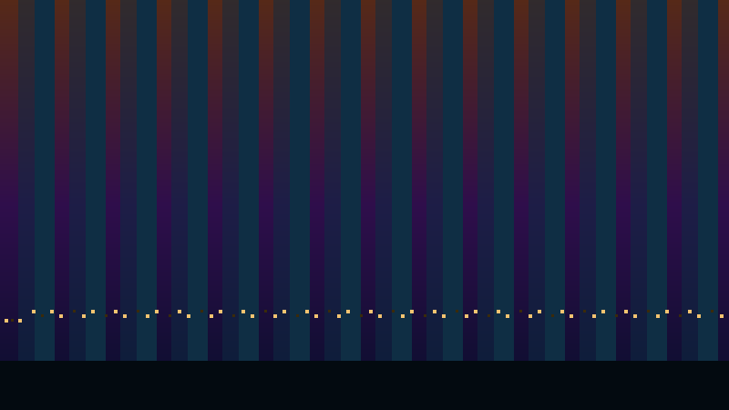
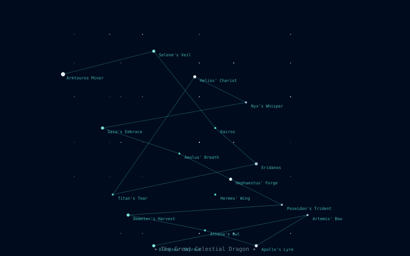
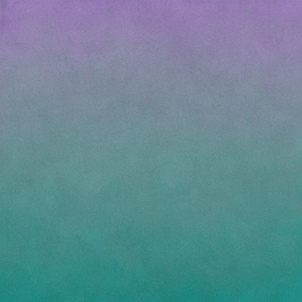
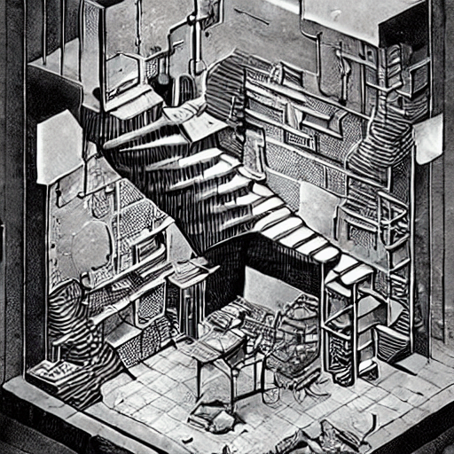
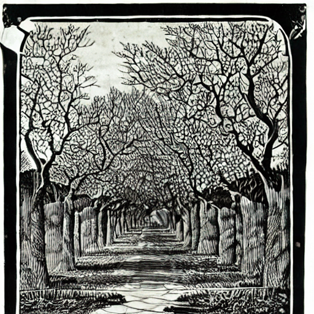
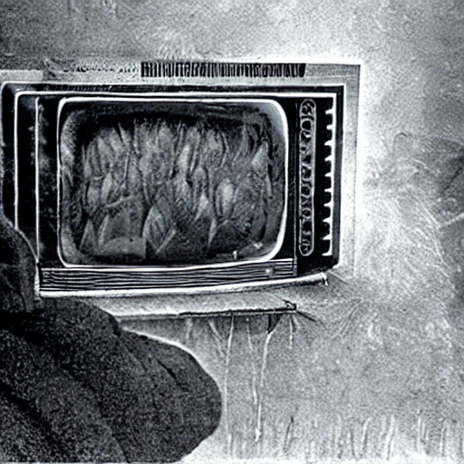
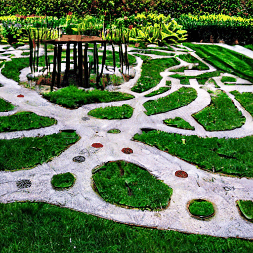

Twelve plugins, one interface
All built-in plugins live in plugins/ at the repo root. Each one has an
mcp.json manifest declaring its tool schema, output type, and remix graph edges,
plus a plugin.py with an ArtGenerator subclass that runs the generation.

Layered SVG landscape scenes — sky gradients, terrain silhouettes, atmospheric effects. Eleven named palettes (volcanic, arctic, toxic, midnight…). The LLM receives a structured prompt specifying horizon divisions, color zones, and decorative elements; outputs raw SVG that the app renders and archives.

Urban skyline silhouettes against atmospheric skies. Era selector spans Victorian to brutalist to sci-fi; sky presets cover dawn through storm. Each generation produces a unique building density, bridge configuration, and light scatter pattern. Good source material for image-to-video remixing.

Invented star charts with mythological lore. The LLM designs a constellation shape as a sequence of star coordinates, names the figure, and writes accompanying mythology. The SVG renderer draws the connecting lines, star glyphs at varying magnitudes, and decorative star-field scatter.

Abstract geometric compositions: line grids, triangle fields, hexagonal tilings, and rectangle decompositions. Three complexity levels (minimal, balanced, dense) and six named palettes. The LLM decides element placement, opacity layering, and accent color use within the palette constraints.
PCB-style circuit diagram art. The LLM places logic gates, trace routes, pad arrays, and chip outlines in a fixed-grid SVG coordinate system. Gate shapes are selectable (ANSI, IEC, or symbolic). Output looks like a functional schematic but is purely decorative — good for backgrounds and poster art.
Named color palettes with evocative prose lore. The LLM invents a 4–8 color set, names the palette ("Drowned Ironwork", "Fever Season"), and writes 2–3 sentences of sensory description — what the palette feels like, not what it looks like. Output is JSON with hex values, role labels, and lore text. Optionally exports CSS custom properties.
through stations that no longer
need to be named
Structured text art in four forms: haiku sequences (5-7-5), world-building lore fragments (codex-style, under 80 words), epitaphs (solemn, compressed), and rhyming couplets. Each form has a strict system prompt tuned for that register. Haiku shine at small model sizes; lore and epitaphs benefit from larger.
a single instruction with no
structural constraints.
Open-ended text generation with a single user-supplied instruction. No form constraints — the LLM writes whatever the instruction says. Useful for generating custom prompts, short prose, lists, or any text that doesn't fit a structured form. The instruction is the entire prompt; no post-processing.
xterm-256 color ANSI art on a 40×20 character canvas via a three-pass
LLM pipeline: (1) ASCII structure — spatial composition with plain text;
(2) block refinement — replace dense chars with ░▒▓█▀▄; (3) colorization —
wrap each character with \033[38;5;Nm escape sequences.
BBS style uses neon-on-void palette rules; scene/landscape use naturalistic colors.

Animated GIF generation using the SD 1.4 TTNN UNet pipeline on Blackhole hardware. No server, no Docker — runs directly on the Blackhole chip via the TTNN runtime. Uses cross-frame temporal attention for motion continuity. Best subjects: natural cyclical motion — fire, water, wind, breath, foliage. ~5 min/frame on a single P300c.
ffmpeg_convert_to_gif
ffmpeg_convert_to_mp4
ffmpeg_get_metadata
ffmpeg_resize
Utility plugin exposing five ffmpeg operations as MCP tools. Used internally by the Remix engine for silent format conversions (e.g. video → I2V seed frame). Also callable from Claude Code sessions for media manipulation tasks. Utility plugins don't appear in the Art tab generator picker — they're infrastructure.
via tt-midi-maker MCP server.
Remix target: verse → midi
Delegate plugin for the tt-midi-maker MCP server. When the server is
running, generate_midi produces MIDI files from text prompts,
verse, or palette hints. The manifest also declares a stream_midi
tool for continuous generative MIDI output. This plugin demonstrates the
MCP-server-backed pattern — no plugin.py required.
AnimateDiff examples
All generated on a single Blackhole P300c, no cloud, no server.



